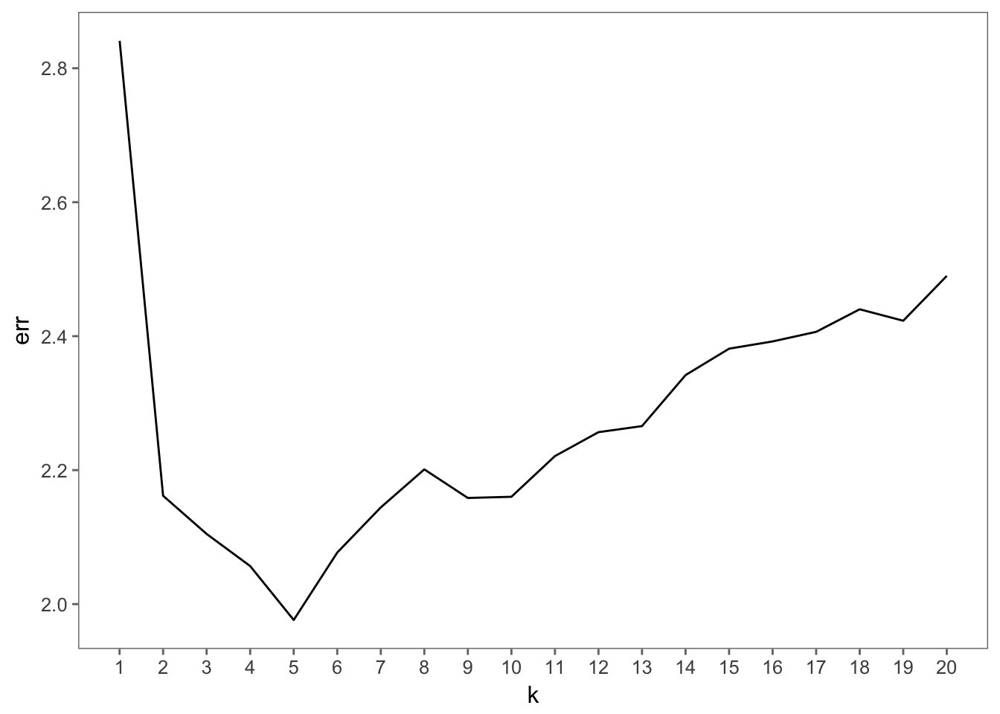
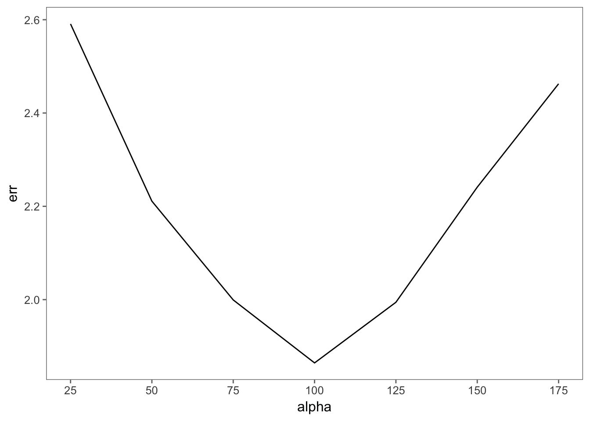
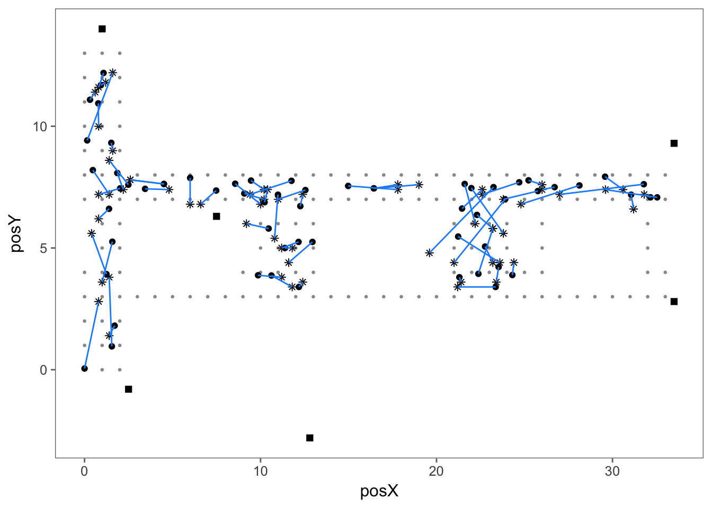
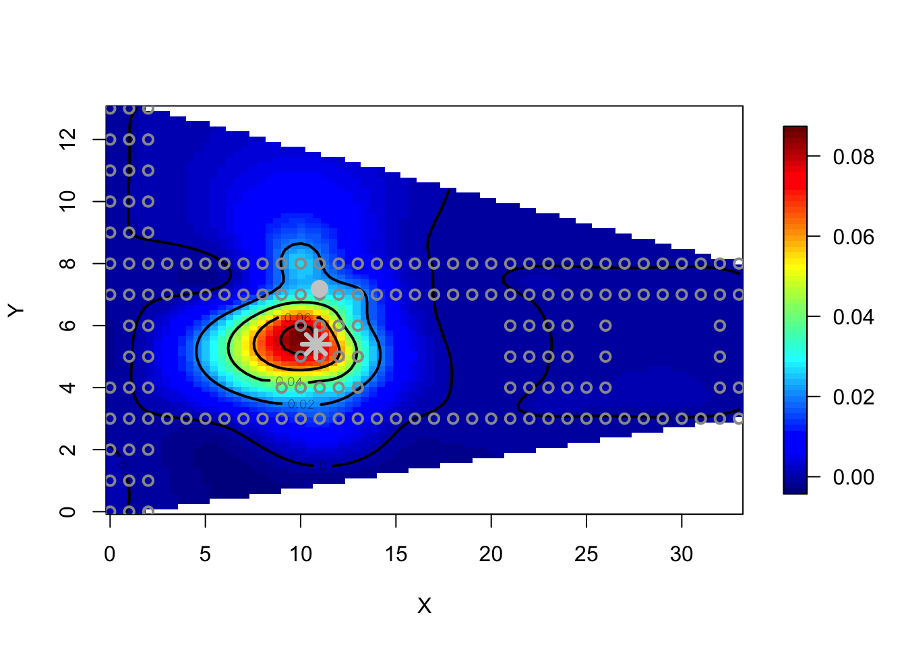

The researchers who collected these data implemented a Bayesian approach to predicting location from signal strength. Their work is described in a paper that is available from http://www.informatik.uni-mannheim.de/pi4/publications/King2006g.pdf. Consider implementing this approach to building a statistical IPS.
The data on the CRAWDAD website doesn’t entirely match up with the description of the data in the published paper, but it’s close enough to get some decent results.
The authors’ model involves collecting all offline data with orientations within a certain angle \(\alpha\) from the online point’s orientation. That is, an online point with orientation 30 degrees and \(\alpha = 25\) would include only offline points at an orientation of 45 degrees, whereas if \(\alpha = 95\), we would include orientations 0, 45, 90, and 315 degrees from the offline data. The function to subset the offline data looks like this.
get_summary <- function(offline, orientation, similarity_angle) {
refs <- seq(0, by = 45, length = 8)
lower_bd <- (orientation - similarity_angle) %% 360
upper_bd <- (orientation + similarity_angle) %% 360
if ((orientation - similarity_angle) %/% 360 == 0 &&
(orientation + similarity_angle) %/% 360 == 0) {
angles <- refs[which(refs >= lower_bd & refs <= upper_bd)]
} else {
angles <- refs[which(refs >= lower_bd | refs <= upper_bd)]
}
offline %>%
filter(angle %in% angles) %>%
group_by(posX, posY, mac) %>%
summarise(avg_signal = mean(signal), sd_signal = sd(signal)) %>%
ungroup()
}Once it has selected the appropriate orientations, get_summary() calculates the mean and standard deviation signal strengths for every location and every MAC address.
Next, we need to calculate the posterior probabilities for each location given the observed signal strengths. Here is the function that accomplishes this:
find_prob <- function(sig, orientation, similarity_angle, train) {
get_summary(train, orientation, similarity_angle) %>%
group_by(posX, posY) %>%
left_join(sig, by = 'mac') %>%
mutate(g = pnorm(obs_signal + 0.5, avg_signal, sd_signal) -
pnorm(obs_signal - 0.5, avg_signal, sd_signal)) %>%
summarise(p = prod(g)) %>%
ungroup() %>%
mutate(pi = (p / n()),
pi = pi / sum(pi)) %>%
select(-p) %>%
arrange(desc(pi))
}This is a little hard to follow. Here are the main steps:
sig is a data frame with 6 rows and 2 columns. It contains the access points and the signal strength measurements taken for the online data point from each of them. For each location and each access point, calculate g, the probabity of measuring the signal strength value of that access point at that location. This is based on the mean and standard deviation signal strengths from the offline data, and assuming the signal strengths are normally distributed.p, the probability of observing the signal strengths that were observed at each reference point.pi, the posterior probabilities.We need to apply this function to each set of measurements from every location. I’ll split the online data up using tidyr::nest():
Mlist <- online %>%
group_by(posX, posY, orientation, mac) %>%
summarise(obs_signal = mean(signal)) %>%
nest() %>%
.$dataWe’ll also need the orientations of every online point.
orientations <- online %>%
group_by(posX, posY, orientation) %>%
summarise() %>%
.$orientationNow we’re ready to generate the results.
results <- map2_dfr(Mlist,
orientations,
find_prob,
similarity_angle = 70,
train = offline,
.id = 'point')
results## # A tibble: 10,292 x 4
## point posX posY pi
## <chr> <dbl> <dbl> <dbl>
## 1 1 0 4 0.13763012
## 2 1 1 2 0.13749940
## 3 1 2 4 0.09957900
## 4 1 1 5 0.09748840
## 5 1 0 0 0.09092198
## 6 1 2 1 0.08466351
## 7 1 2 2 0.06825941
## 8 1 2 3 0.04625553
## 9 1 0 2 0.04341196
## 10 1 0 1 0.03877661
## # ... with 10,282 more rowsNext we need to decide how many points to average together to get the location prediction. We can do this as a function of the number of points, which we’ll call \(k\).
calculate_predictions <- function(results, k) {
results %>%
group_by(pt = as.numeric(point)) %>%
top_n(k, pi) %>%
summarise(x = mean(posX), y = mean(posY))
}And we’ll write a function that will return the RMSE, or how off our predictions were on average.
error_by_k <- function(k, results, actual) {
preds <- calculate_predictions(results, k) %>% select(x, y)
sqrt(calc_error(preds, actual) / nrow(actual))
}Now we can find which value of \(k\) results in the smallest error.
actual <- online %>%
group_by(posX, posY, orientation) %>%
summarise() %>%
select(posX, posY)
errs <- map_dbl(1:20, error_by_k, results = results, actual = actual)
data_frame(k = 1:20, err = errs) %>%
ggplot(aes(k, err)) +
geom_line() +
scale_x_continuous(breaks = 1:20)
It looks like \(k=5\) minimizes the error, which agrees with the paper’s findings. We can do the same thing to find the optimal value for \(\alpha\).
alpha <- seq(25, 175, by = 25)
err <- rep(NA, length(alpha))
for (i in seq_along(alpha)) {
results <- map2_dfr(Mlist,
orientations,
find_prob,
similarity_angle = alpha[i],
train = offline,
.id = 'point')
err[i] <- error_by_k(5, results, actual)
}
data_frame(alpha = alpha, err = err) %>%
ggplot(aes(alpha, err)) +
geom_line() +
scale_x_continuous(breaks = alpha)
We’re getting the smallest error around \(\alpha = 100\) degrees. The minimum RMSE indicates that our location predictions are off by about 1.86 meters on average. This is somewhat worse than the paper’s best error distance of 1.65 meters, but still not too shabby. It would be better to choose \(k\) and \(\alpha\) by cross validation, but due to a lack of computing power on my crappy laptop I won’t do that here. Here is a map of predictions versus the actual locations for \(k=5\) and \(\alpha=100\):
results <- map2_dfr(Mlist,
orientations,
find_prob,
similarity_angle = 100,
train = offline,
.id = 'point')
preds <- calculate_predictions(results, 5) %>% select(x, y)
online_with_preds <- online %>%
group_by(posX, posY, orientation) %>%
summarise() %>%
bind_cols(preds)
offline %>%
group_by(posX, posY) %>%
summarise() %>%
ggplot(aes(posX, posY)) +
geom_point(color = 'grey60', size = 0.5) +
geom_point(data = ap, aes(x, y), shape = 15, size = 2) +
geom_point(data = online_with_preds, aes(posX, posY)) +
geom_point(data = online_with_preds, aes(x, y), shape = 8) +
geom_segment(data = online_with_preds, aes(x = posX, y = posY, xend = x, yend = y), color = 'dodgerblue')
This probabilistic approach lends itself to interesting visualizations. We can use the same spline regression approach as before with fields::Tps() to create a contour map of the likeliest areas for each point. The hollow circles are the offline measurement locations, the asterisk is the predicted location, and the large filled gray circle is the actual location.
i <- 29
r <- results %>% filter(point == i)
smooth <- fields::Tps(cbind(r$posX, r$posY), r$pi)
viz <- fields::predictSurface(smooth)
fields::plot.surface(viz, type = 'C')
points(summarise(group_by(offline, posX, posY))$posX,
summarise(group_by(offline, posX, posY))$posY,
pch = 21, lwd = 2, col = 'grey60')
points(online_with_preds$posX[i],
online_with_preds$posY[i],
pch = 20, cex = 2.5, col = 'grey80')
points(online_with_preds$x[i],
online_with_preds$y[i],
pch = 8, lwd = 3.5, cex = 2, col = 'grey80')